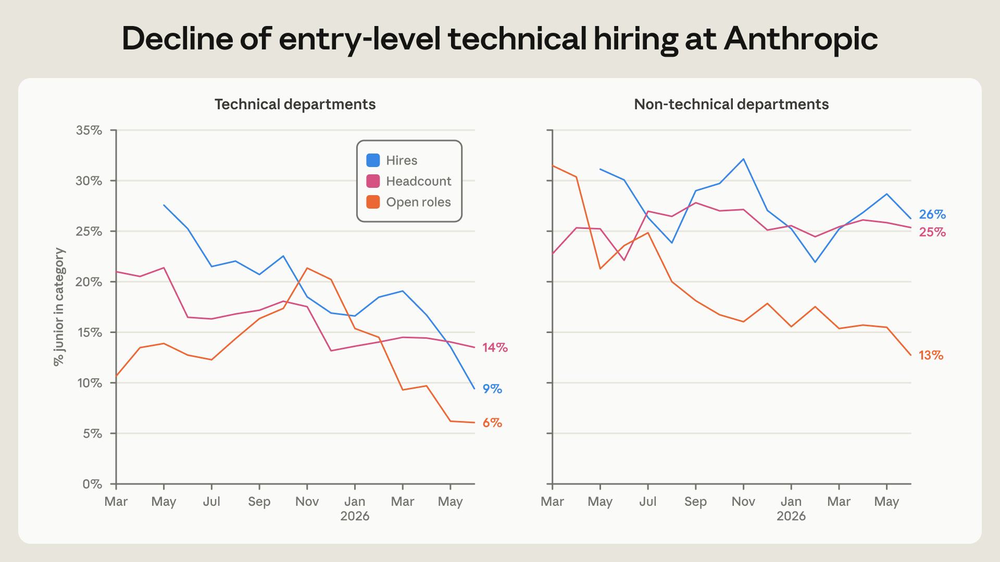
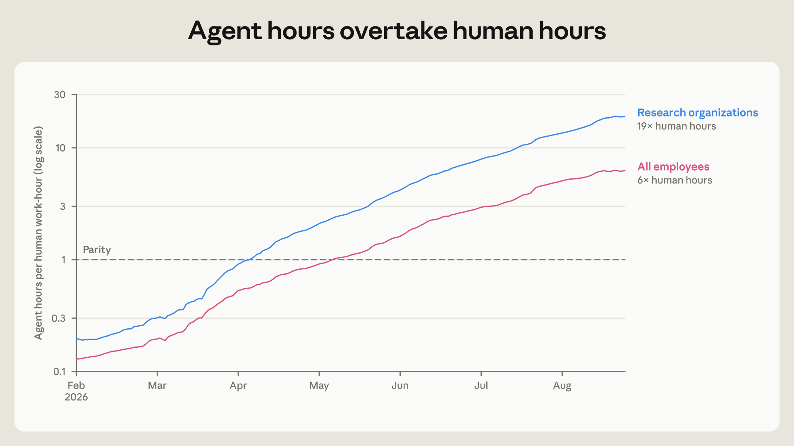
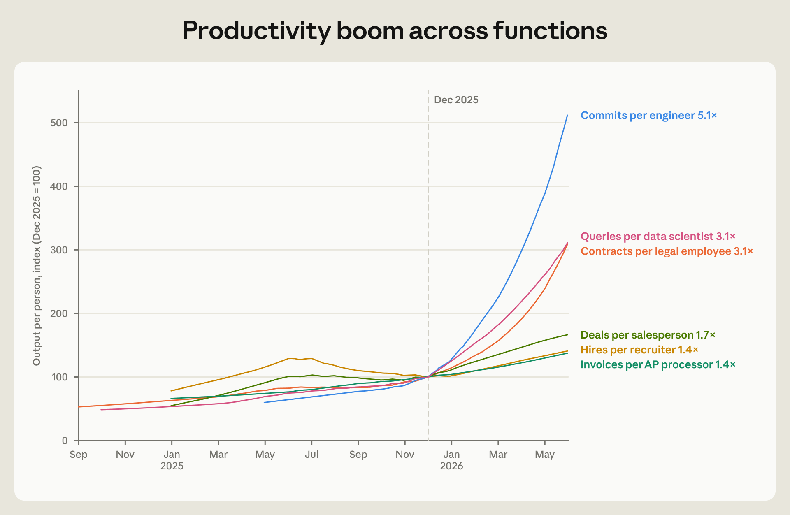
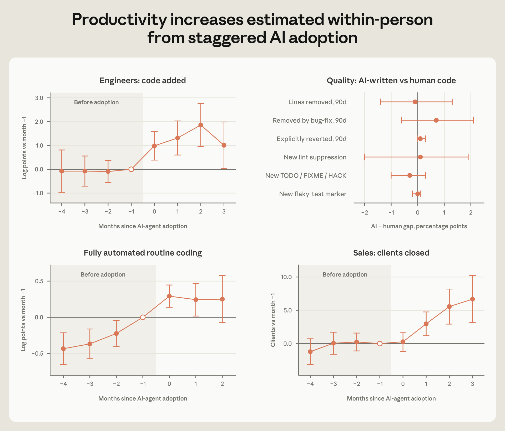
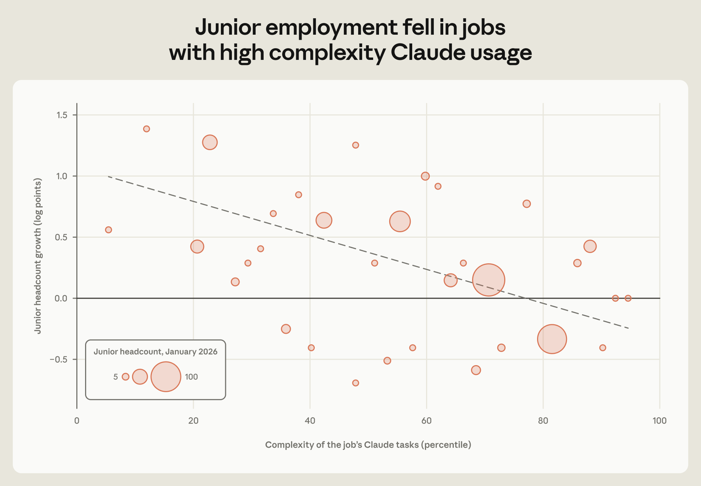
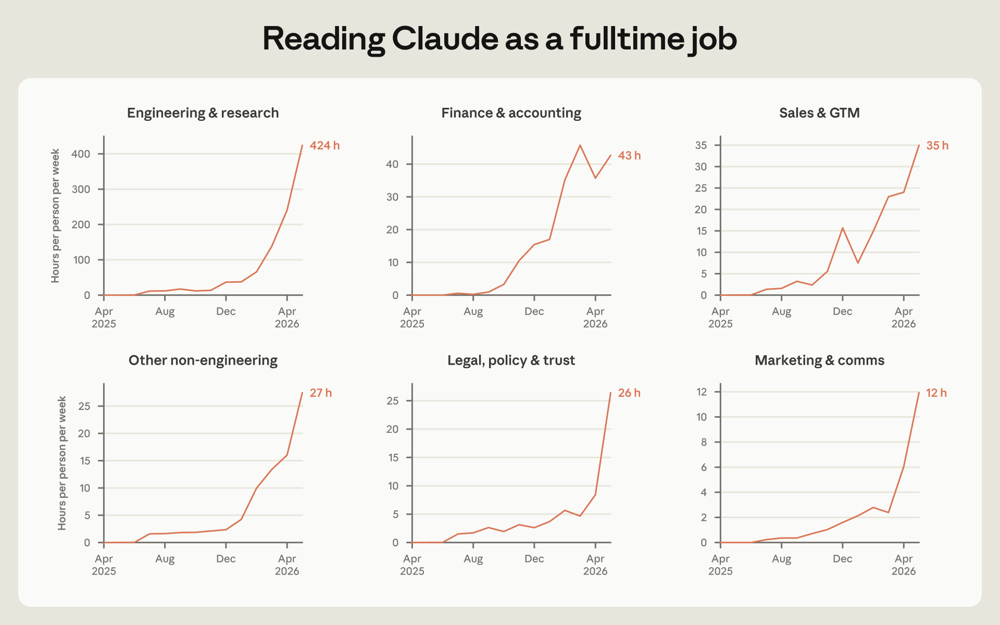
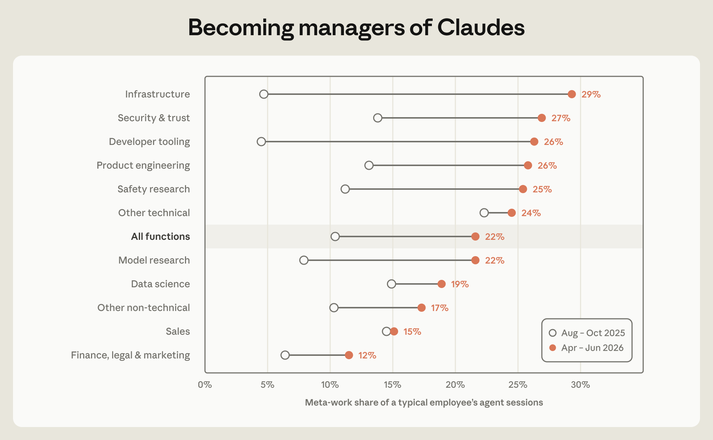

1主要发现
AI 怎样改写了 Anthropic 的工作和就业？作为处在 AI 采用最前沿的公司，Anthropic 可能是整条经济里工作组织、招聘和劳动力需求将怎么变的领先指标。
- 初级技术岗位在招聘里占的份额变小了。同时，AI 代理相对员工的工时迅速扩大。到 8 月，交互式 AI 代理的工时已经是员工的六倍。
- AI 代理在公司里铺开之后，人均写出的代码更多，每个销售代表成交更多，处理的合同也更多。跟着同一名员工往前看，采用新的 AI 工具之后，产出上升。
- 这种加速让人的注意力成了代理产出的瓶颈。即便在非技术员工里，把他们 Claude 代理的全部输出读完，也要占去半个工作周。于是员工转向「元工作」：做可见性工具，盯代理流水线。
- 工作组织上的变化，反映在招聘经理优先级的挪动：相对技术领域专长和落地执行，他们越来越强调自主和判断。
2引言
越来越强的 AI 下，工作和就业会变成什么样？Anthropic 值得研究，因为它已经把工作流彻底按 AI 来塑过。代理在 Slack 里穿来穿去、安排会议。它们自己修 bug，也一起啃巨大的工程项目。代理工时对人的工时是 6 比 1。此刻发生在 Anthropic 的变化，给一种可能的工作和就业前景提供了提前信号。
这份报告用的是 Anthropic 内部比较完整的数据：就业、AI 使用、产出指标、员工问卷、内部沟通模式、员工日历、招聘决策记录。定量材料旁边，还有 17 次员工访谈。
我们发现：公司在长，初级技术岗位的相对招聘却慢下来了。工程师和非技术员工的生产率都跳了一截，而且是在他们采用编码代理时跳得最猛。招聘经理相对具体的技术专长，越来越强调申请人的自主和判断。在一个 AI 很重的组织里干活，一个鲜明特征是：只要做得到，就一直有压力把自己从瓶颈位上精简出去。一位工程师把工作形容成面对「一支 Claude 大军，每一个都在要我的注意力」。Anthropic 的员工仍然关键。可他们贡献的性质已经变了。
Anthropic 的回应是建一套早期预警，跟踪可能被打乱的岗位；岗位在变的时候，公司优先做内部再安置。这些动作发生在 AI 研发和工作场所变化的最前沿，说明具体的组织承诺可以塑造 AI 对就业的影响。它们也提出更难的问题：那些承诺究竟该是什么。
3前沿上的劳动力需求
Anthropic 扩张很快。但按每一美元收入雇的人，比上一代大型科技公司少。成立五年时，Anthropic 的人均收入大约是 Meta 和 Google 各自快速增长顶峰时的 2 到 4 倍。1
缺的是哪些岗位？公司内部，关于初级技术员工需求下降的讨论，2026 年 1 月出现在核心技术职能里。自己工作最依赖 Claude 的团队发现，写代码和找 bug 越来越能卸给 Claude。新能力的模型把这种感觉加快了：「特别让人抬眉毛的是性能工程师这边的提升，基本上一夜之间就改了我们在找什么。」
到 4 月，工程和研究团队已经弱化了较低职级技术岗位的招聘。同月问卷里，多数管理者说因为 AI，他们在招另一套技能。大约三分之一的机器学习管理者、五分之一的软件工程管理者报告，因为 AI 而招得更少。
就业份额的挪动很刺眼。图 1 显示，Anthropic 技术部门里初级员工的份额，从 2025 年初的 21% 滑到 14%。初级技术招聘的比例掉得更快，从 27% 到 9%。初级岗位的招聘启事从 2025 年 12 月起掉得尤其陡。

与此同时，技术部门在全公司就业里的份额，过去一年从 61% 降到 56%。公司在扩，技术招聘的绝对人数仍在涨，但销售、财务、招聘这边招得更猛，超过了它。一部分是公司变大之后业务职能的自然扩张。一部分可能是编码工具让非技术员工也能自己做软件。一位销售代表给自己的工作做了定制看板和流水线：「这样的东西本来不在我的能力圈里，尤其是界面、把工具接上、MCP。可我大概三四个小时就做出来了，就迭代。」非技术员工（基线没有代码提交、排除新雇）以编码为主的 AI 代理会话，从 2025 年 8 月每月 2 次跳到 2026 年 5 月的 90 次。
招聘构成的变化，也不只是编码自动化扩散到其他领域专家。技术部门内部，过去 30 天没有代码提交的员工份额，到 2026 年 4 月这一年里几乎减半。一部分是非工程师变薄：工程师对产品经理大约是 17 比 1，比 2025 年还高。管理者的提交数也翻了一倍。技术团队里监督和协调的角色，越来越多地包含构建和发出代码。
非技术招聘没有加速的一块，是通常会随公司规模一起长的行政职能。代理助手、自动审核，外加工单外包，让 Anthropic 在快速变大的同时仍然偏「文员轻」。一位财务经理做了采购申请审核代理，跟同事解释：「它就是在找那些特别吃小时的事，好让人去盯别的。」
即便和当面互动绑得很紧的文职工作，也长得慢。一位行政助理给自己做了安排日程和邮件分拣的私人助理代理，解释说：「我觉得我们已经过了 Claude 把入门级行政岗增强掉的那一步」，转而把工作放在更高一层的「幕僚长」任务上。
这些变化已经包含再配置：在公司至少干满一年的员工，2026 年每个月跨部门流动的可能性比 2025 年高 50%。整支团队也会在把工作交给代理之后被再配置。看一支产品设计团队，他们写过 Claude.ai 上的问候：「Hello night owl;」「Coffee and Claude time?」2026 年春，团队做了一张上下文图，有效地引导代理写出有说服力的产品文案。管理者说这把「团队规模化出去了」，也提出一个问题：人类写作者还剩什么。团队随后转到代理提示，开始为 Claude 写模型评测和提示。「曾经用语言驱动人的行为的写作者，现在用它驱动 Claude 的行为。」
4产出涨了，是 AI 吗
这些挪动能算到 AI 头上吗？在 Anthropic，人是薄薄一层，底下是越来越多的 AI 代理。根据代理会话遥测，2026 年 3 月，自主代理和交互式代理的工时合计第一次超过人的工时。一部分是成群的代理在做工业规模的软件工程：填无数例行测试和检查、维护越堆越多的基础设施代码、发动把巨大代码库翻译过去的战役。可即便收窄到由单个员工部署的代理，如图 2，到 8 月这些代理的工时已经是他们人类经手人的 6 倍。

Anthropic 是软件生产者，流过这些代理的 token 绝大多数花在产软件代码上。看板盯着公司各处跑着的代理群。可私人助理代理也盯员工日历和消息：安排日程、从进来的消息里攒待办、自动给即将到来的会议准备人和目的的简报。Token 碰到的日常任务越来越宽。

这些 token 最后变成什么？图 3 画了一批有可测产出的岗位职能随时间的产出。和此前调查 Anthropic 工程师、描述模型训练和研究自动化的报告一致，每位工程师的代码提交涨得最快，速度是六个月前的 5 倍。数据科学家也在更多地查询越堆越多的 Anthropic 数据，让 Claude 代理把实时指标送到看板和决策者那里。可图 3 也显示，编码代理铺开时，非技术员工的产出同样上升：律师处理了更多合同；应付账款把发票送过去；销售成交了更多单。
可这全是 Claude 用出来的吗？同一时期，公司业务在爆炸式增长。卖的是强模型，成交更容易。为了单独看 AI 的作用，我们比较采用了代理式编码工具的员工，和还没采用的员工。这样可以比较同一个月、因此暴露在相似业务环境里、却拿着不同工具去对付它的人。但工具采用并不是随机的：如果员工正要推动某个大项目、为此先把工具武装起来，估计就会偏。
我们跟着 192 名工程师，看他们采用编码代理之后发生了什么，对照是研究期内没有采用代理的 74 名工程师。图 4 显示，采用之后几个月，工程师加入的代码量急剧上升。更多代码不一定是更好的代码，也不一定有业务影响。为了测 AI 代码 slop，我们看 Anthropic 的代码提交。比较的是同一名员工、同一个月、同一个编码目录，由编码代理写出的代码，对同一人直接写出的代码。代码质量有很多维，AI 的错误也可能比人的更难看出来。但我们没有发现随后被删掉或回退的代码行比例有差别。
图 4 也看工程师采用第一个完全自主的代理之后发生了什么。采用的人相对未采用者，本来就已经在一条很陡的上升轨迹上。这提示：转向完全自主代理的员工，产出本来就在往上爬。

这些模式会不会越过编码，变成更宽的知识工作改造？Anthropic 的销售代表从去年 9 月起稳步采用 AI 代理。图 4 显示，销售代表采用代理之后，和更多客户成交。一部分可能是手里机会更多的代表自己选进了自动化。也可能反映日志和例行沟通被自动化。一位客户经理说，Claude 自动化处理了邮件起草和客户管理软件对接，替掉了大约 20% 原先的工作任务。另一位说，类似的自动化把他们腾出来做面对面时间，能多谈 30% 的客户：「任何事你做第二次的时候，你大概就会想，好，我怎么用 Claude，让我不必做第三次？」
销售之外，一位 Anthropic 律师做了一系列 Claude 自动化，扫描风险和机会、分拣法律问题、给对外文案做法律审阅的第一遍。一位招聘用 Claude 帮忙找候选人、跟踪申请，以及一份「也许要几周」的分析，好腾出手去改过时的面试题、见更多申请人。
这些都提示：AI 能力上去之后，会碰到 Anthropic 很宽的一串岗位。描述性地看，在用 Claude 做最复杂任务的岗位上，初级就业放慢了（图 5）。

5注意力成了瓶颈
重度采用 AI，改的不只是就业和生产率。它也持续改工作过程，造出新任务，挪动员工对职场的感知。一位员工把这说成「Anthropic 里永远存在的压力：尽快动、什么都用 Claude」；另一位说「我们指望一周做完的事，在别处要三个月」。内部问卷问过：Anthropic 的工作过程是否让回答者尽可能地高效。2024 年底 44% 同意；2025 年 11 月 58%（2026 年 4 月 75% 答是，但题目弱化了，去掉了「尽可能」）。到 8 月，Anthropic 员工预期到 2030 年 AI 能做他们 75% 的工作，其他美国人是 28%。
这种不断拧紧的生产率预期，被内部发模型的节奏戏剧化了。新模型一可用，Anthropic 员工就开始在交互式编码代理会话里啃更难的问题。我们用一个自动的 Claude 评分器，按深度、范围、牵涉多少系统，给去标识的会话打任务难度。超过旧模型难度 90 分位的任务份额急剧上升大约 30%（从全部任务的 10% 到 13%），发模型后的几周里一直抬着。交给代理的简单那一端几乎没变。
螺旋上升的代理生产率，变成泼到人屏幕和注意力上的产出。一位工程师把这比成带小孩：
2026 年 4 月问卷有一道开放题，问 AI 怎样影响日常工作。27% 描述了 Claude 工具带来的生产率增益，20% 描述角色从实际干活转到管理 Claude。
在这种由模型驱动的加速里，人的注意力是恒定的瓶颈。交互式、多轮会话里，代理绝大部分会话时间根本没在干活，而在等。我们从每次交互会话的墙上时钟时间里减去该代理的主动工作时间，来跟踪空闲。Claude 会话大约 80% 是闲着等人的输入。一位工程师的说法是：人在「给代理制造瓶颈」。
要把交互式会话里 Claude 的全部输出读完，到底要多少时间？每次会话，我们把代理输出 token 换成词数，按平均人类阅读速度。图 6 显示，技术职能过去六个月编码代理输出量跳了上去。可即便对非技术组，交互式 Claude 会话吐出的内容也够占去半个工作周以上。这股 Claude 文字需要被组织起来。

对付这股洪流的一个办法是提高自动化。可这要求另一种工作。写给代理的常驻指令，从 2025 年 7 月的几百条，一年后到 8,500 条。一位工程师给代理请求分拣，设了一个代理幕僚长。另一位给他们的 Claude 团队写绩效评估：「嘿，我们聊聊沟通方式里什么管用、什么不管用。」招聘做了整合看板，由代理把问题顶出来并启动动作。一位律师把注意力从审法律问题挪到做「法律建议的 SEO，你得写框架，让客户的代理能发现」。
图 7 显示，这类元工作从 2025 年秋占普通员工交互式 Claude 会话的 10%，跳到 2026 年春的 22%。涨幅很大一块专门来自代理管理：给多代理跑写规格、让一个代理去审另一个的输出、盯流水线。跨职能看，人的参与越来越从某一段代码或某一篇文字抽离，抽到让代理有效完成任务所必需的那套工具上。

尽管代理更可靠了，尽管在监督工具上投了很多，人的信任和问责仍然关键。一位员工解释，追 bug 越来越「揭开这些组织的、系统的、或者技术债的东西，真的需要一定程度的人把大家召集起来、做决定、做治理才能解」。一次又一次访谈里，员工把面对面协调说成少不了。按日历数据，中位员工开会时间比一年前多 20%。一部分反映公司变大，以及转向更吃会议的非技术角色。可即便在技术个人贡献者角色里，开会时间过去一年也多了 16%。大画面的战略问题碰到一串被杠杆放大的位置，通常需要辩论、需要和别人咬住。从管理代理里歇一口气，看起来往往是跳进一场会。
宽一点说，技术和非技术角色都看见岗位里落地的那一块被自动化了（写代码、找 bug、记进度、起草邮件）。工程师描述自己变成代理的领导和管理者；非技术员工描述自己越来越多地做岗位里战略的那一块：「那 20% 战略的，变成工作的 90%。」可对许多非技术角色，核心落地工作也是人际的：一次销售电话、一次面试、一个复杂问题上的跨职能对齐。这些仍然是人的。
再看 Slack 频道，它们是 Anthropic 沟通的头版，也是后巷。代理扩散进 Slack，最终出现在将近一半活跃的公开频道里。图 8 拉近到一个大部门的沟通网络，用的是该部门成员互动过的全部公开 Slack 频道。它把人和代理参与者按是否出现在同一条 Slack 线程里连起来。图上能看见代理惊人的升起：橙色点绽开，占满网络。
代理不成比例地出现在专门给 Claude–人互动的频道里，很少在既有的人的频道里大量发消息。人与人沟通底下的结构和密度几乎没变。代理没有替换人的互动，叠了上去：这个部门里，人的线程保持了同样数量的人回复，另外再叠一层代理回复。代理变成单个员工的团队，很少同时连到许多员工。
人在越来越大的 AI 代理舰队里干活，会感到压力：把人的工作挪进代理看得见的通道。如果一个决定在当面会上做完，没有笔记也没有对外通报，代理就缺了更新目标和假设的关键上下文。一位员工解释，自己名字还留在一份几个月前关于 Claude 周边商品的文档上，代理就一直把 T 恤和杯子的请求送过来，早过了职责已经改掉的时候。没记日志的会、私信里的私下工作，在一个 AI 很重的职场里是看不见的、令人困惑的、不受鼓励的。一位研究者把这种默认敞开说成 Anthropic 把 AI 彻底接进去的关键：「大多数组织不那样运转，我觉得这是一个大挪动，因为领导者必须在公开场合为反馈辩护。」要喂给 AI 上下文，就要求人的工作和决定可被观察到。
谁会在这样的职场里站住？Anthropic 工作内容的挪动，也出现在招聘经理在招聘决策里优先看的技能上。我们用自动编码器处理了 2024 年以来 Anthropic 雇进来的数千名员工的招聘经理面试评分卡。这些评论是面试官评估候选人表现时的定性反应。最清楚的变化是：更强调候选人是否展示过创造性地使用 AI 工具。2024 年，招聘经理在大约 5% 的技术岗位评估、7% 的非技术岗位评估里提到候选人在 AI 工具上的记录。到 2026 年，技术岗位大约翻了三倍，非技术岗位大约翻了四倍。招聘经理越来越盯候选人是否有效地使用 AI。
评估里更深的变化也看得见。技术候选人的面试里，涨得最多的单条是对申请人自主和判断的评论。领域专长在总体评估里占的份额缩小了。一位管理者解释：「我预期模型会继续参差不齐，所以对我的团队，我希望他们跨领域可替换。」类似地，非技术候选人这边，客户导向和使命导向上升，对执行技能的讨论下降。招聘经理越来越按判断和投入来评估申请人，而不是按被 AI 工具自动化掉的领域技能和执行。
6雇主能做什么
Anthropic 对 AI 的深度采用，让它成为一个有用的案例。AI 扩散并变强时，工作组织可能像此前几波技术变革那样挪动。铁路给了我们管理型公司，蒸汽允许工厂，个人电脑送来了创业公司。会用工具、会推理的大模型会要求怎样的新组织，我们在里面又是什么角色？一种可能是单人创业公司，每个人类创始人指挥一群代理去扫进几十亿美元收入。另一种是由 AI 天才 CEO 建起来的公司，雇人类代理只为了拿移液器和去国会作证。
Anthropic 看起来哪一种都不是。过去一年它扩大了两倍，已经不是小创业公司。它也没有把经营控制交给模型。写在 Slack 里的辩论和当面会议，从公司战略到团队决定都由它们来掌舵，AI 代理几乎不掺和。让人的工作在全公司看得见，保证自主代理从新鲜上下文里推理。编排一队代理的个人贡献者，在他们需要的知识和工作里的相互依赖上，看起来更像管理者。在一个 AI 很重的组织里，公开地工作和做决定是关键。
员工越来越把自己的工作看成管理 Claude 团队，他们就花更多时间，在自己独特的领域里做把这件事做好所需要的工具。这种试验意味着员工在持续把自己的任务自动化掉。在一些角色里，他们越来越离开当初练出技能的那一层对象工作。代理在工作流里冲刺时，人的注意力和判断是系统在顶着的瓶颈。从销售到法务，人类员工被期待做更多、也做不同的任务。角色变宽，包括做产品、管代理，以及对付最好的大模型仍然够不到的战略和人际工作。
这些工作组织和内容上的变化，和初级技术角色在人数、招聘、启事里份额下降一起出现。招聘经理越来越盯申请人的自主和判断，而不是执行和窄的专长。总体上看，Anthropic 收入增长相对就业增长，已经超过上一代科技公司早期那一截很快的生产率增长。
把这些模式往前读、往整条经济上铺，提示 AI 扩散可能带来工人被挤出的风险。此前研究也发现，AI 原生创业公司和 AI 采用者更扁平，雇的入门级员工更少。我们能从 Anthropic 学到什么，好让 AI 带来的动荡以服务围着它们干活的人的方式被管住？
这里我们想小心往前走。Anthropic 就业实践里有许多部分，没法在整条经济里复制。
可有三点站得住。第一，广泛的股权让员工对公司的成败有很强的利害。当然，对一家估值已经大幅上涨的公司，这姿态容易。对许多企业，共享所有权可能不够，或者本来就不想要。可很难想象一种对工人有利的 AI 采用，工人却不在成功铺开里持有财务利害。如果个人贡献者被期待「管代理」「做副总裁级别的决定」「自己就是一条业务线」——访谈对象的说法——那么把他们的利害和组织对齐就是要紧的。二战后 1950 年代锻出来的工会–管理层安排，靠的正是这种交易：汽车工人联合会、钢铁工人联合会这类工会，允许管理层对工作重组（甚至加码）有决定权，换来跟生产率上涨绑在一起的加薪，外加一串丰厚福利。无论 AI 影响到的员工和雇主之间的新交易是什么，一套分享采用收益的机制都少不了。在 Anthropic，工人把自己的专长写成给机器的东西，看见工作常规不断被搅动、被打乱，很大一块工作变成速读 AI 合作者的输出。他们不是免费做这些。
第二，Anthropic 正在立一套持续的早期预警，监视面临 AI 驱动转型的岗位。一串岗位层的需求和生产率指标，对着 AI 能力和使用来读。这些汇总指标帮忙标出工作正在挪到哪里。早期预警让公司可以开始把受影响的员工再安置到技能匹配、眼前风险可能更小的岗位。整条经济里的公司转向更快的工作重组节奏时，有效地引导内部再配置的系统会越来越值钱。每出现 AI 进展要求的新任务就去外部劳动力市场找人，AI 进展越快，这个瓶颈会越硬。这份报告里我们看到部门之间流动增加、工作内容在变、旧任务被自动化之后员工转到新任务。建一套能灵活在内部再配置工人的系统，对 AI 很重的组织会是关键。
对内部再配置的承诺也带来重要取舍。运转良好的劳动力市场应当把工人挪到他们最有生产率的位置，无论是在当前雇主还是另一家。承诺再配置在职者，可能让雇主对新雇一个人更犹豫。在正常经济条件下，尤其是竞争很烈的时候，这种承诺可能很贵。
可优先再配置，会逼采用 AI 的公司去想：AI 怎样为新产品、新市场造出新任务，而不是把 AI 应用漏斗进替换人类工人、省劳动力成本。这可能帮雇主顶住「凑合」或「低效」自动化的诱惑——AI 或其他技术只是刚刚胜过人类工人：雇主换掉人，把可观的社会成本以被挤出工人失去收入的形式甩出去，生产率收益却很小。
从我们在 Anthropic 看到的看，密集使用 AI 的旁边，新任务和一直是人的任务都还在。对未来这套任务不确定，就应当建议保住一支灵活的劳动力。一位 Anthropic 高管说：「一支焦虑发慌的劳动力，做不出最好的工作。」
这些动作没有哪一项能阻止强大的 AI 打乱岗位。它们也没有直接处理这份报告记录的初级招聘放慢。对在职者的就业保护，帮不到一开始就没被雇进来的人。雇主这边的私人行动，必须和有远见的政府政策并排走：再培训和收入支持。这类政策应当被一幅清楚的图引导：AI 能把职场改到多宽。
7出处
这篇是译文。原文 Nathan Wilmers、Regina Catipon、Maxim Massenkoff、Peter McCrory，How employment is changing at Anthropic，Anthropic，2026-10-16。图 1 到图 7 和 Slack 网络视频来自原文。
脚注 1：Anthropic 的估计来自截至 2026 年 4 月这十二个月的内部财务和人数记录（大约成立五年）。Google 和 Meta 的就业与收入数字来自各自成立五年时的 10-K（分别为 2003 年和 2009 年）。全部数字折到 2025 年美元。
代理工时 6 比 1、初级份额 21% 到 14%、招聘 27% 到 9%、192 对 74 名工程师、提交速度 5 倍、空闲约 80%、元工作 10% 到 22%、常驻指令到 8,500 条，都按原文转述。工具采用不是随机的，原文自己写了；代码质量代理指标没有差别，也不等于代码更好或有业务影响。我没有 Anthropic 内部原始数据，也没有核过图上的点。